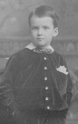
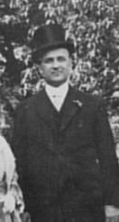

Thomas Baker McQuesten
(Tom, Tim, Tomity, Tomty)
Jun. 30, 1882 - Jan. 13, 1948
You do not know what a help and strength you have been to your mother. I am so nervous and anxious minded that if you had been anything else but what you are I would certainly have broken down. If you had been a lazy good for nothing, selfish and unsympathetic, it seems to me I would have died, for people do die of broken hearts. (W-MCP2-4.037a)
Thomas Baker McQuesten was just six years old when his father died in 1888. He was physically and mentally robust, intelligent, athletic, handsome and genial. He embodied the best hope for the family's return to financial stability; therefore, Mary concentrated all of the family resources on him. Mary's letters to him demonstrate her great affection for him and her dedication to his success. She molded his attitudes, morals, and provided his life's plan. She was not as concerned about his health and abilities as she was about Calvin's. Tom is always mentioned with pride and affection by all family members.
Tom was educated at Hamilton Public Schools and graduated from Hamilton Collegiate with honours in English, History and Classics. He entered the University of Toronto in 1900 and distinguished himself by winning the Alexander Mackenzie Scholarship for Political Science in 1903 which brought a very small cash prize. He was president of his fraternity (Zeta Psi) and editor of Varsity.
Tom very nearly won the Rhodes Scholarship in 1904, the first year it was offered, but it became a political contest, and he lost out to another candidate. The scholarship would have provided $1500 per year and it was a sad blow and disappointment to his mother when he did not win. The money would have made a great deal of difference to the family and it was a long time before his mother was able to forget it (W5199, W5271). Tom's sister, Ruby, a teacher, continued to send money to Tom to pay for his tuition, and his father's former law partner, James Chisholm, helped him as well. He had a variety of summer jobs which often involved physical labour and he grew lean and tough. This included work on a cattle boat by which he made his way to England and Scotland to visit the original family home there in 1901. He also worked in the lumber camps on the Ottawa River for the summers of 1903 and 1904, but the danger in this work was kept a secret from his mother (W8164).
It was a long hard struggle, and in April of 1907, when Tom was twenty-five years of age, he was still requiring money from his family for fees and living expenses (W5812). After graduation from Osgoode in 1907, Tom practiced law at Elk Lake near Cobalt during the silver mining boom. He loved the hardy life in the North where he could hike and canoe, but the opportunities for success were bleak.
Thomas's family made many sacrifices for his education and he was twenty-seven years of age, in 1909, before he had a stable income with James Chisholm, a member of Tom's father's law firm in Hamilton. Tom's initial salary was $1000 per year, with some prospects of sharing profits as well, and his mother soon urged him to press for this increase, as well as for a finer-looking office (W8239). She also stated that "it is certainly going to mean a great difference to us"; however, it was also in 1909 that Ruby's health expenses began to mount, and Edna required medical treatment for mental illness from time to time. By 1911, Tom was able to give some conditional assurance to his mother and to Calvin that "there will be no lack of money but we just have to arrange it" (W6732). Therefore, it was twenty-one years, from 1888 to 1909, before Mary and her family were able to feel some relief from the financial pressures. Tom became the titular head of the family, but Mary continued in control; she convinced him to stay in Hamilton, and urged him into politics and public works.
Tom never married, but there is some evidence that he was engaged to a Miss Elliott in Toronto. His mother did not hear about it except by rumour, and Tom finally introduced his mother to Miss Elliott after his graduation from law school in 1907. Although Mary did not approve, she had to deal more carefully with her son, and the relationship continued secretly for some time. Miss Elliott attempted to win Mary's approval by commissioning a miniature of Mary to be painted by an artist friend; however, Mary continued to find fault with it, and made it an issue between Tom and Miss Elliott. Mary was not one to be seduced so easily and Miss Elliott was no match for her (W5868, W6012).
Precisely why Mary objected to Miss Elliott is never explained in the letters, but it likely has its source in the fact that Thomas had been groomed by his mother to replace his father as the successful lawyer and family provider, which would restore the family to its former status. Now when Tom had just graduated and was on the brink of becoming their saviour, he was considering abandoning them.
Tom certainly felt his obligation to his mother and sisters to take financial responsibility for their support, which he did after he went into law practice, but he would not have earned enough money for many years to support a wife as well. Mary had already established, in her objection to David Ross's marriage to Ruby, that it was a disgrace for a man to consider marriage until his duty to his own family had been fulfilled. The family, especially Ruby, had made many sacrifices to pay for Tom's education, and he was only now, at the age of twenty-six, beginning to show some promise of providing some financial relief for the family. Although there is no direct evidence that Mary actively broke up the relationship, it did not come to fruition and Tom continued to fulfill his duties to his family. However, Thomas was handsome and popular and had other relationships with women, but they were very discreet and he never married (Best 205n1). Both Tom and Calvin preferred to spend their time away from home. Although Tom was reluctant to come back home to live, he finally determined that the best place for him was Hamilton where he could practice law and enter politics. He stated to Calvin "It would be almost hopeless for a Liberal to get elected in Toronto. I think I would stand a far better chance in Hamilton, but then, I could not afford to be a stranger there" (W8176). At the same time the matriarchal pressure was mounting to get him involved in law and politics at home and Mary stated that she "hoped that here I may get him interested in some other good works as well" as, indeed, she did (W6318).
Thomas's career is recounted fully and admirably in John Best's biography: Thomas Baker McQuesten: Public Works, Politics and Imagination (1991), and in Roland Barnsley's biography: Thomas B. McQuesten (1987). I direct the reader to these works for a full account of Thomas's political career and accomplishments. However, I will note a few important events here especially as they relate to his mother's influence. Tom was elected vice-president of the Hamilton Liberal Club in 1912, where John Chisholm was president. Tom was then elected to Alderman for the City of Hamilton in1913 which he held until 1920. His family encouraged him and campaigned vigorously in his political career.
In the war of 1914-18 Tom favoured conscription and was determined to join the armed forces. He had already served in the Militia during university. His mother was adamant that he not go and, after much argument, he did not enlist. In 1914 Tom was already thirty-two years of age and was the sole support of his family. Mary did not support the war and felt the money and the lives could have been used to better advantage in the missionary field. She could not risk losing Tom and deplored the loss of the lives of young Canadians and "their mothers left to mourn them" (W6828). She also viewed the war as a male folly and was quite disgusted with "the way men do things" (W6975).
Tom proceeded, with his mother's urging and full approval, to fulfill himself in public works. He was an astute politician and a good judge of character and quickly learned how to manage people, but he preferred to work behind the scenes, taking little credit for himself. He formed partnerships with other lawyers, politicians, engineers, architects, artists and horticulturalists to effect his plans to beautify the city and the province. In this he was reflecting the family's dedication to social reform through city planning, beautification and education. This late Victorian cultural impulse was known as the "Social Gospel" and "City Beautiful" movements.
Significantly for this study, which was originally done as a Ph.D. thesis under the auspices of McMaster University, Thomas McQuesten was instrumental in bringing McMaster University to Hamilton from Toronto. Other cities in Ontario were competing for the university throughout the 1920's, but the factor that "tipped the scales" in Hamilton's favour was the offer by the Hamilton Board of Parks Management, of which Tom was a member, to provide the attractive Westdale site and "magnificent landscaped grounds"(Barnsley 29). The site was turned over to McMaster in 1928. The Sunken Garden and Lily Pool was a quiet haven of inspiration for scholars, and attracted many visitors until the garden was destroyed for the construction of the McMaster Medical Center. Tom viewed McMaster as one of the finest contributions that he and his team were able to accomplish (Best 58; 7010).
We've never landed such a fish as this. . . . Our whole development has been along mechanics lines. And the result has been, the owners don't live here. . . . and Hamilton has become too much a factory town. This is the first break toward a broader culture and higher educational development. It was sorely needed. Did I ever think what a great word 'university' is? - It has never been let down, never become stale or commonplace, always dignified and lofty (Best 58).
Mary's letters in 1928 and 1930 Reveal her pride in McMaster's growth, both as a university and as a park, "Very large contributions coming in for McMaster; nearly the $500,000, and again: "C. Whidden [was] amazed at the flowers, cannot take any more students." In these pursuits Tom had his mother's encouragement and, after Tom learned to drive in 1928, he took her on many trips to inspect various parks, greenhouses, and McMaster University and its gardens (W7010, W7080, W7085, W7095, W7124, W7128, W7136).
Tom served on the Hamilton Board of Parks Management from 1922 to 1948. Within the first decade, by 1932, Hamilton had the largest acreage of developed park land and playgrounds in any Canadian city. This included: Gage Park, Cootes Paradise, Scott Park, King's Forest Park, Chedoke Golf Course, The Royal Botanical Gardens ("Rock Gardens") and The High Level Bridge (posthumously renamed the McQuesten High Level Bridge). Tom fulfilled his familial and his public duties admirably. His friend and associate on the Parks Board, C.V. Langs, summed up Tom's self-sacrificing dedication: "T.B. McQuesten is a bachelor . . . whose bride is the city parks system" (Best 68).
Tom's sister Hilda acted as his hostess for social and political functions, and they were an attractive and charming couple at various functions. There is no doubt that Hilda's charm, grace and intelligence added to Tom's success, and that Mary was extremely proud of them. They often received invitations to social functions.
Tom fell under the influence of Noulan Couchon who was an advocate of "The Garden City Movement" which was sweeping England and Europe and which viewed parks as "the lungs of the city" (The Spectator, Hamilton, Dec 7, 1991). As well as the influence of his mother and sisters, there was a strong feminine content in Tom's work. He hired Laurie Dunnington as part of the married team of Dunnington-Grubbe, who were garden designers, and he employed Frances Loring and Florence Wyle as the sculptors for his projects.
After his mother's death in1934, Tom continued to expand his (and his mother's) public conservation and beautification vision. In the same year he was elected to the Provincial Government and was appointed to the Cabinet with two portfolios: Minister of Public Works and Minister of Highways for Ontario. In this position he was responsible for the construction of the Queen Elizabeth Highway and other roads, the Rainbow Bridge, the Blue Water Bridge at Sarnia, and the Ivy Lea Bridge at Gananoque. He had a strong sense of history and his ministry reconstructed Fort Henry, Fort Erie and Fort George and the Martello towers at Kingston. Tom was also chairman of the Niagara Parks Commission and oversaw the construction of the Niagara Parkway, the Floral Clock, the Oakes Garden Theatre, Queen Victoria Park, Queenston Heights Park and Restaurant, as well as the School for Apprentice Gardeners which provided training and graduates for the maintenance of the parks.
Tom dedicated himself to his family rather than to marriage and children, and he devoted his life to public works in education, beautification, and community improvement. Tom was also self-effacing and gracious in giving credit to his mother for her encouragement and imagination, and he referred to her as his "best chum" (Barnsley 18). Mary's obituary in the Hamilton Herald Dec 7, 1934 states Tom's acknowledged indebtedness to his mother as the inspiration for his achievements:
Mr. McQuesten has told of the large part his mother has played in molding his tastes, his standards and his plan of life. Not the least of her contributions to him was to give him a love for beauty that was large enough to spread out and influence the appearance of a great city... Large areas of Hamilton are, in the last analysis, a reflection of her love for beauty.
Tom was awarded the Hamilton Citizen of the Year Award which Calvin accepted on his behalf while Tom was ill in hospital with cancer. He died on January 13, 1948, and is buried in the family plot in Hamilton Cemetery. Unlike many politicians, Tom did not profit from his political career beyond his salary; he was scrupulously honest, and when he died he left a modest estate of $50,000 including his share of Whitehern (Best 191). However, he and his mother and family left to the world the many beauty spots which are a testament to their lives. Regrettably, only one of these perpetuates the McQuesten name.
Thomas Baker McQuesten was also honoured by the Hamilton Public Library in 1986 when he was inducted into their Gallery of Distinction.
POLITICAL POSITIONS AND APPOINTMENTS (Minnes, p. 1-5)
City Alderman for Ward 2, Hamilton (1913-1920)
- Chairman of special gas committee, fought for municipal ownership of Hamilton gas distribution systems
Liberal Association
- President of Hamilton Liberal Association (1921-1923)
- Management Committee of the Liberal Party in Ottawa (1925)
- Vice-President of the Ontario Liberal Association (1930 or 1931)
- President of the Ontario Liberal Association (1932 or 1933-43)
Member of Provincial Parliament, Ontario (1934-1943)
- Commissioner on Hydro-Electric Power Commission (1934-1937)
- Minister of Municipal Affairs (1940-1943)
- Minister of Public Works (1934-1937, 1942-1943)
- Minister of Highways (1934-1943)
Chairman of Works Committee, Hamilton Board of Parks Management (1922-1947)
Chairman of Niagara Parks Commission (1934-1943)
Chairman of Niagara Bridge Commission (1939-1947)
|